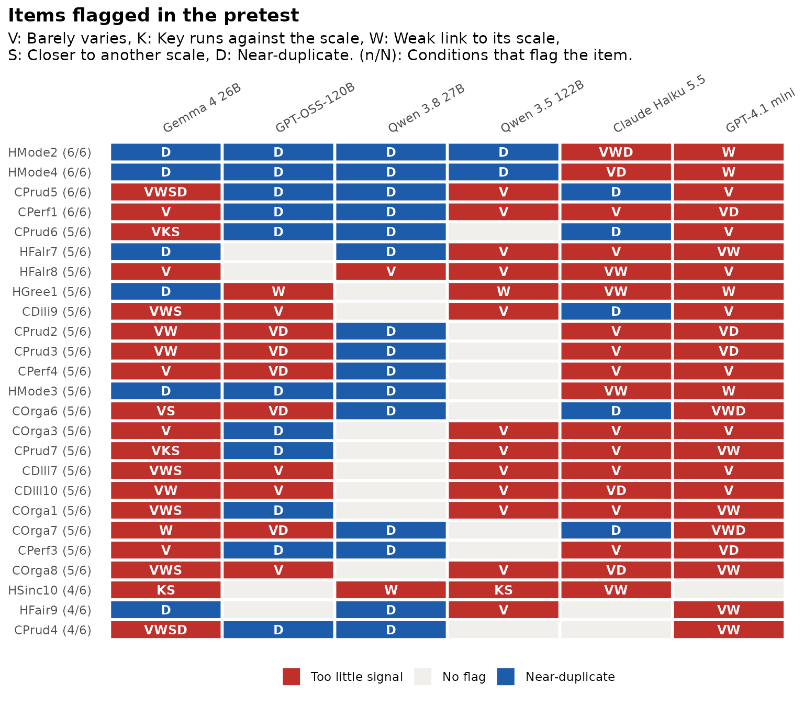
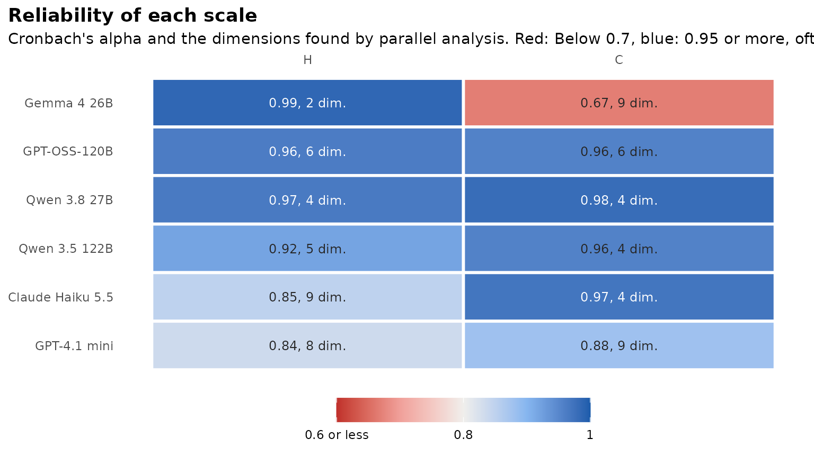

Most people who write a new scale have no real data yet.
synthetic_pretest() is for that stage. It runs a standard
item analysis on synthetic respondents and flags items worth a second
look. It also asks two questions that stand in for real data: Do the
flags hold across models, temperatures, prompt wordings and persona
sets? And do the synthetic answers recover the structure you
designed?
This is pilot screening, not validation. Language models answer more tidily than people do (see the benchmark article), so a clean pretest does not show that a scale works in people. Items that fail even with tidy respondents are the ones to rewrite first.
The data
The tutorial treats two HEXACO traits, Honesty-Humility (H) and
Conscientiousness (C), as if they were a new 80-item scale. The six
models in hexaco_llm are the conditions, with three
attempts each:
library(synthcheck)
items <- hexaco_items[hexaco_items$trait %in% c("H", "C"), ]
synthetic <- hexaco_llm[hexaco_llm$country == "Canada" & hexaco_llm$attempt <= 3, ]
table(synthetic$model)
#>
#> Gemma 4 26B GPT-OSS-120B Qwen 3.8 27B Qwen 3.5 122B
#> 1500 1500 1450 1500
#> Claude Haiku 5.5 GPT-4.1 mini
#> 1500 1500For your own scale, generate the data with
generate_synthetic() or the app (see Generating synthetic respondents in R). The
item table needs item and scale, and
reverse for reverse-keyed items. Those columns are the
structure the pretest checks.
Run the pretest
pt <- synthetic_pretest(synthetic, items, by = "model", irt = FALSE)
pt
#> Pretest without real data: Pilot screening, not validation
#> 80 items in 2 scales, 6 conditions.
#>
#> condition attempts n items flagged alpha scales n_factors own_scale
#> Gemma 4 26B 3 1500 80 72 0.83 2 9 0.82
#> GPT-OSS-120B 3 1500 80 51 0.96 2 11 1.00
#> Qwen 3.8 27B 3 1450 80 20 0.97 2 7 1.00
#> Qwen 3.5 122B 3 1500 80 24 0.94 2 9 0.99
#> Claude Haiku 5.5 3 1500 80 70 0.91 2 12 1.00
#> GPT-4.1 mini 3 1500 80 64 0.86 2 15 0.99
#> reverse_ok
#> 0.89
#> 1.00
#> 1.00
#> 0.98
#> 1.00
#> 1.00
#>
#> Flagged items (80), most often first:
#> item scale flagged_in
#> HMode2 H 6
#> HMode4 H 6
#> CPrud5 C 6
#> CPerf1 C 6
#> CPrud6 C 5
#> HFair7 H 5
#> HFair8 H 5
#> HGree1 H 5
#> CDili9 C 5
#> CPrud2 C 5
#> flags
#> Near-duplicate, Weak link to its scale, Barely varies
#> Near-duplicate, Barely varies, Weak link to its scale
#> Near-duplicate, Barely varies, Weak link to its scale, Closer to another scale
#> Barely varies, Near-duplicate
#> Near-duplicate, Barely varies, Reverse key not working, Closer to another scale
#> Barely varies, Near-duplicate, Weak link to its scale
#> Barely varies, Weak link to its scale
#> Weak link to its scale, Barely varies, Near-duplicate
#> Barely varies, Weak link to its scale, Closer to another scale, Near-duplicate
#> Barely varies, Near-duplicate, Weak link to its scale
#> ... and 70 more in `$agreement`.
#>
#> flagged: Items with at least one flag; own_scale: Share of items closest to their own scale;
#> reverse_ok: Share of reverse-keyed items whose key comes through;
#> n_factors: Dimensions by parallel analysis over all items (designed: `scales`).Each row of the summary is one condition: How many items it flags, the mean alpha over scales, the number of dimensions parallel analysis finds over all items (next to the two scales designed), the share of items that relate most to their own scale, and the share of reverse-keyed items whose key comes through.
irt = TRUE (the default) also fits a graded response
model per scale with mirt and flags items with a slope below 0.5. It is
the slowest step, so it is off here.
Which items are flagged, and by how many models?
An item is flagged when it barely varies (SD below 0.5, or 90% of the
answers in one category), when its keyed answers run against the rest of
its scale, when its item-rest correlation is below 0.3, when it relates
more to another scale than to its own, or when it correlates 0.85 or
more with another item. thresholds changes any of
these.
gg_pretest(pt, max_items = 25)
Red tiles are items with too little signal, blue tiles are
near-duplicates, and the label gives the number of models that flag the
item. agreement holds the same information as a table, most
often flagged first:
head(pt$agreement[, c("item", "scale", "flagged_in", "flags", "attempt_share")], 10)
#> # A tibble: 10 × 5
#> item scale flagged_in flags attempt_share
#> <chr> <chr> <int> <chr> <dbl>
#> 1 HMode2 H 6 Near-duplicate, Weak link to its scale… 1
#> 2 HMode4 H 6 Near-duplicate, Barely varies, Weak li… 1
#> 3 CPrud5 C 6 Near-duplicate, Barely varies, Weak li… 0.944
#> 4 CPerf1 C 6 Barely varies, Near-duplicate 0.944
#> 5 CPrud6 C 5 Near-duplicate, Barely varies, Reverse… 0.944
#> 6 HFair7 H 5 Barely varies, Near-duplicate, Weak li… 0.944
#> 7 HFair8 H 5 Barely varies, Weak link to its scale 0.889
#> 8 HGree1 H 5 Weak link to its scale, Barely varies,… 0.833
#> 9 CDili9 C 5 Barely varies, Weak link to its scale,… 0.833
#> 10 CPrud2 C 5 Barely varies, Near-duplicate, Weak li… 0.833attempt_share is the share of single attempts that flag
the item. A flag that comes and goes between attempts of the same model
may be sampling noise.
Here most items are flagged by at least one model, and “Barely varies” and “Near-duplicate” are the most common reasons. That is the tidy answering of language models, not a property of 80 bad items. When this happens, start with the items that most models agree on, and read “Weak link” and “Reverse key not working” before the other flags.
Do the conditions agree?
stability compares every pair of conditions: The rank
correlation of their item-rest correlations (rho) and the
share of flagged items they have in common (jaccard).
pt$stability
#> # A tibble: 15 × 4
#> condition_a condition_b rho jaccard
#> <chr> <chr> <dbl> <dbl>
#> 1 Gemma 4 26B GPT-OSS-120B 0.517 0.618
#> 2 Gemma 4 26B Qwen 3.8 27B -0.113 0.260
#> 3 Gemma 4 26B Qwen 3.5 122B 0.0259 0.297
#> 4 Gemma 4 26B Claude Haiku 5.5 -0.556 0.775
#> 5 Gemma 4 26B GPT-4.1 mini -0.110 0.744
#> 6 GPT-OSS-120B Qwen 3.8 27B 0.221 0.246
#> 7 GPT-OSS-120B Qwen 3.5 122B 0.262 0.271
#> 8 GPT-OSS-120B Claude Haiku 5.5 -0.0347 0.613
#> 9 GPT-OSS-120B GPT-4.1 mini 0.229 0.597
#> 10 Qwen 3.8 27B Qwen 3.5 122B 0.560 0.257
#> 11 Qwen 3.8 27B Claude Haiku 5.5 0.429 0.25
#> 12 Qwen 3.8 27B GPT-4.1 mini 0.184 0.273
#> 13 Qwen 3.5 122B Claude Haiku 5.5 0.380 0.270
#> 14 Qwen 3.5 122B GPT-4.1 mini 0.191 0.333
#> 15 Claude Haiku 5.5 GPT-4.1 mini 0.220 0.718On HEXACO the models agree only in part: Some pairs rank the items
alike, and others not at all. Low agreement is a finding too: It means a
different model would have told you to fix different items. The same
comparison works for temperatures, prompt wordings or persona sets. Give
each run its own label and pass that column as by, or
several columns, as in by = c("model", "wording"). In the
app, “Or several temperatures” in the Models tab adds one model per
temperature.
Does the designed structure come back?
pt$summary[, c("condition", "scales", "n_factors", "own_scale", "reverse_ok")]
#> # A tibble: 6 × 5
#> condition scales n_factors own_scale reverse_ok
#> <chr> <int> <int> <dbl> <dbl>
#> 1 Gemma 4 26B 2 9 0.823 0.891
#> 2 GPT-OSS-120B 2 11 1 1
#> 3 Qwen 3.8 27B 2 7 1 1
#> 4 Qwen 3.5 122B 2 9 0.988 0.979
#> 5 Claude Haiku 5.5 2 12 1 1
#> 6 GPT-4.1 mini 2 15 0.987 1
gg_pretest(pt, "scales")
Almost every item relates most to the scale it was written for, and the reverse keys come through. Parallel analysis finds more dimensions than the two scales, because each HEXACO trait has four facets; the real data below give more than two as well. The scale plot shows the tidy answers again: Alpha is 0.95 or more for many models, higher than real people give.
Plain language
summarise_pretest(pt)
#> Pretest without real data, in plain language
#>
#> This is pilot screening on synthetic respondents only. It flags items
#> worth a second look; it does not show that the scale works in people.
#>
#> 80 of 80 items are flagged in at least one condition, and 4 in all 6
#> conditions. Flagged most often: HMode2 (near-duplicate, weak link to
#> its scale, barely varies), HMode4 (near-duplicate, barely varies, weak
#> link to its scale), CPrud5 (near-duplicate, barely varies, weak link to
#> its scale, closer to another scale), CPerf1 (barely varies,
#> near-duplicate) and CPrud6 (near-duplicate, barely varies, reverse key
#> not working, closer to another scale). 13 of the flagged items are
#> flagged in fewer than half of the single attempts, so their flags may
#> be sampling noise. When most items are flagged, the flags describe the
#> model's tidy answers as much as the items. Start with the items that
#> most conditions agree on.
#>
#> The conditions disagree on which items link weakly to their scale (mean
#> rank correlation 0.16) and share 43% of their flagged items on average.
#>
#> 82% to 100% of the items relate most to the scale they were written for
#> (range over conditions). The reverse key comes through for 89% to 100%
#> of the reverse-keyed items. You designed 2 scales; parallel analysis
#> finds 7 to 15 dimensions over all items.
#>
#> Alpha is below 0.7 for C in Gemma 4 26B. Alpha is 0.95 or higher in 7
#> of 12 scale results. Synthetic respondents are often more consistent
#> than people, so expect lower values in real data.How well do the flags match real people?
The HEXACO data come with real responses, so this tutorial can check
what the pretest would have found in people.
synthetic_pretest() works on any data:
real <- hexaco_real[hexaco_real$country == "Canada", ]
pr <- synthetic_pretest(real, items, by = NULL, irt = FALSE)
real_flags <- pr$items[pr$items$weak | pr$items$key, c("item", "item_rest", "flags")]
real_flags
#> # A tibble: 7 × 3
#> item item_rest flags
#> <chr> <dbl> <chr>
#> 1 HSinc9 0.215 Weak link to its scale
#> 2 HSinc10 -0.0588 Reverse key not working, Closer to another scale
#> 3 HFair5 0.227 Weak link to its scale
#> 4 HGree2 0.158 Weak link to its scale
#> 5 HGree7 0.280 Weak link to its scale
#> 6 HGree9 0.297 Weak link to its scale
#> 7 HMode8 0.289 Weak link to its scaleHow many of the six models flag these items as weak or running against their scale?
it <- as.data.frame(pt$items)
it$weak_or_key <- it$weak | it$key
n_models <- tapply(it$weak_or_key, it$item, sum)
data.frame(item = real_flags$item, models = n_models[real_flags$item])
#> item models
#> HSinc9 HSinc9 1
#> HSinc10 HSinc10 4
#> HFair5 HFair5 2
#> HGree2 HGree2 4
#> HGree7 HGree7 4
#> HGree9 HGree9 1
#> HMode8 HMode8 2And how closely do the item-rest correlations of each model follow the real ones (rank correlation)?
real_ir <- setNames(pr$items$item_rest, pr$items$item)
sapply(split(it, it$condition), function(d)
round(cor(d$item_rest, real_ir[d$item], method = "spearman", use = "complete.obs"), 2))
#> Claude Haiku 5.5 Gemma 4 26B GPT-4.1 mini GPT-OSS-120B
#> 0.37 -0.05 0.20 0.18
#> Qwen 3.5 122B Qwen 3.8 27B
#> 0.48 0.45The models catch some of the items that are weak in people, and they agree with real people on the ranking of the items only in part. That is why the pretest is screening: It points at items to read again, and a field test still decides.
In the app
On the About tab of the app, answer No, not yet to the first question. The fourth tab is then Pretest: Choose the synthetic data, what to compare the flags across and click Run the pretest. The Interviews tab (5) that follows runs cognitive interviews on the flagged items, as in the cognitive interviews tutorial. See the tour of the app.
Later: Real data
The pretest keeps the item table in pt$settings$items.
Once real responses come in, the same synthetic data go straight into
the benchmark, and the app lets you switch the first question to “Yes, I
have real data”:
real <- read.csv("my_real_data.csv")
authenticity_benchmark(as_synthetic_list(synthetic), real, pt$settings$items)